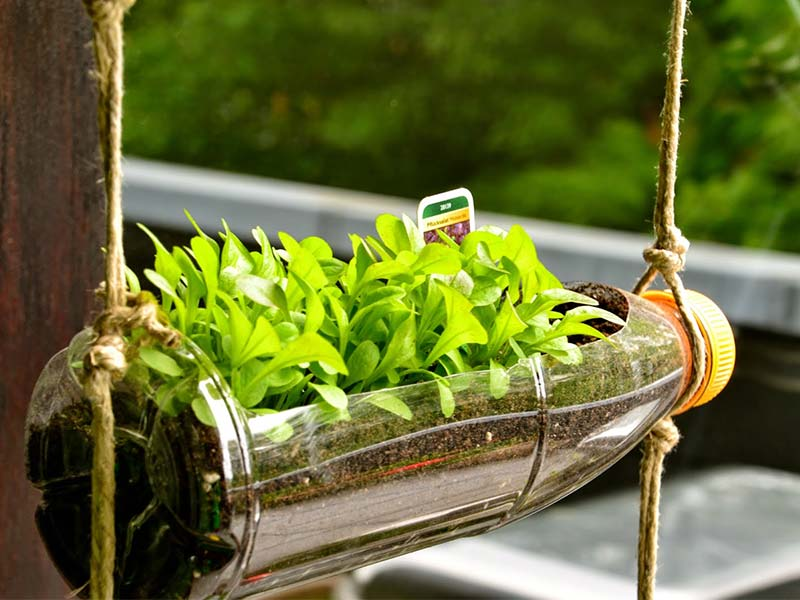

Reutilizar:
Al decir reutilizar, nos estamos refiriendo a poder volver a utilizar las cosas y darles la mayor utilidad posible antes de que llegue la hora de deshacernos de ellas, dado que al disminuir el volumen de la basura.
Esta tarea suele ser la que menos atención recibe y es una de las mas importantes, que también ayuda mucho la economía en casa.
